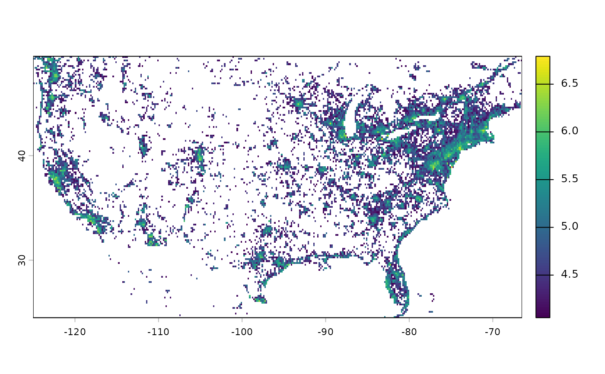
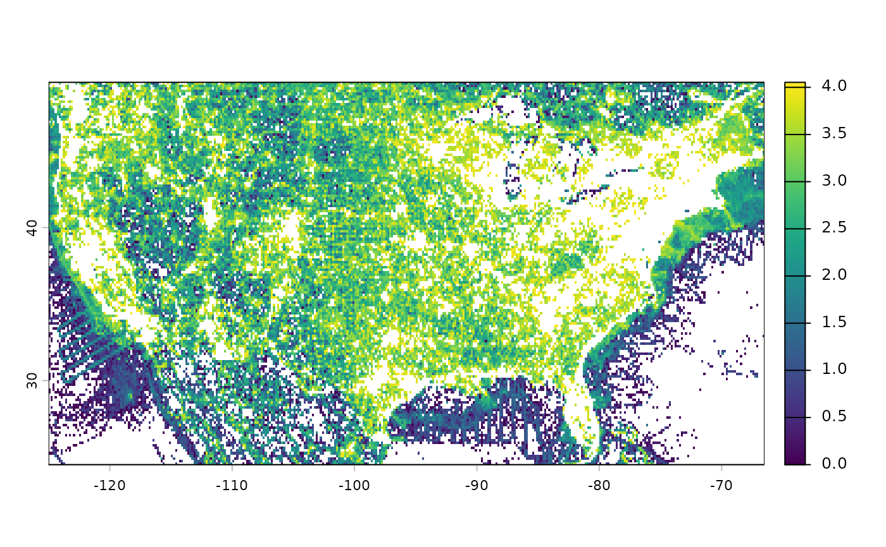
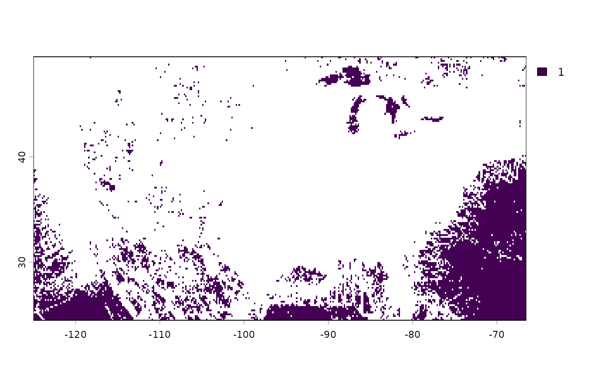

Mask raster to show top % and bottom % of cumulative sum
Source:R/eco_get_sampling_effort.R
mask_cumulative_pct.RdCreates two masked rasters:
top: cells cumulatively accounting for the toptop_pct% of total sumbottom: cells cumulatively accounting for the remaining bottom(100 - top_pct)%
Value
A SpatRaster with three layers:
top: cells cumulatively accounting for the toptop_pct%bottom: cells cumulatively accounting for the lowest(100 - top_pct)%zero_observations: cells with original value equal to zero
Examples
require(terra)
# Sampling effort raster for birds (number of observations at 20 km
# resolution)
efforts_birds_all <- get_sampling_effort(
group = "aves", metric = "n_obs", resolution = 20)
efforts_birds_all_r <- terra::rast(efforts_birds_all$local_path)
result <- mask_cumulative_pct(rast = efforts_birds_all_r, top_pct = 90)
result
#> class : SpatRaster
#> size : 1080, 2160, 3 (nrow, ncol, nlyr)
#> resolution : 0.1666667, 0.1666667 (x, y)
#> extent : -180, 180, -90, 90 (xmin, xmax, ymin, ymax)
#> coord. ref. : lon/lat WGS 84 (EPSG:4326)
#> source(s) : memory
#> varname : n_obs_Aves_res_20
#> names : top_90_per~cumulative, lowest_10_~cumulative, zero_observations
#> min values : 11303, 1, 1
#> max values : 6193941, 11303, 1
# Areas contributing to the top 90% of cumulative sum (log10 scale; computed
# on the global scale and cropped to USA)
result$top_90_percent_cumulative %>%
terra::crop(terra::ext(-125, -66.5, 24.5, 49.5)) %>%
log10() %>%
plot()

# Areas contributing to the lowest 10% of cumulative sum (log10 scale;
# computed on the global scale and cropped to USA)
result$lowest_10_percent_cumulative %>%
terra::crop(terra::ext(-125, -66.5, 24.5, 49.5)) %>%
log10() %>%
plot()

# Areas with zero observations (computed on the global scale and cropped to
# USA)
result$zero_observations %>%
terra::crop(terra::ext(-125, -66.5, 24.5, 49.5)) %>%
plot()
